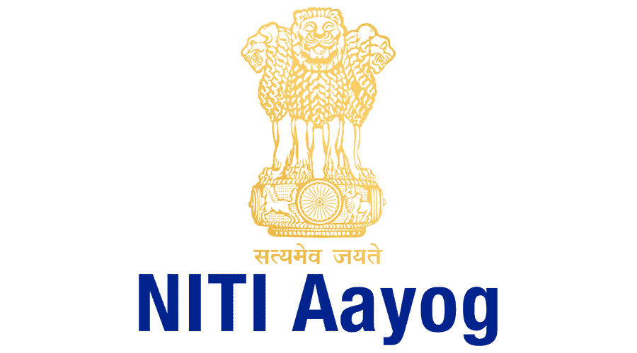

B.Tech Graduate • Data Analyst • Building AI Powered Applications
Hi, I'm Srijan Banerjee
I build practical, efficient, and scalable solutions through programming and AI. As a B.Tech graduate, I enjoy working with data using Python to extract insights and create meaningful outputs, while actively developing AI-driven projects and continuously strengthening my problem-solving and programming skills.
Fresher
Open to Data Analyst and AI Development opportunities
Focus
Programming, AI Development, and Real-World Applications
About
Who I Am
I am a B.Tech graduate with a strong passion for programming, data analysis, and AI, focused on building practical and efficient solutions. I enjoy working with data using Python and Tableau to extract insights and create clear, meaningful visualizations that support better understanding and decision-making.
Alongside this, I actively develop AI-driven projects and continuously strengthen my problem-solving and coding skills. I am an active learner who enjoys exploring new technologies, building real-world applications, and growing as a developer with a goal of pursuing a career in data and AI-driven development.
Quick Info
- Degree: B.Tech in Computer Science and Engineering
- Location: New Delhi, India
- Interests: Data Science, AI Development, DSA
- Career Goal: Data Analyst / Backend Developer / AI Developer
Skills
What I Work With
Languages
Tools
Concepts
Projects
Things I've Built
Academic Project
AI Powered Markup Slide Generator and Chatbot for Document Summarisation
An AI-driven system that converts book content into concise presentation slides and supports interactive chatbot queries. It processes PDF or text inputs, extracts structured content, and uses Gemini models to generate summaries and enable real-time Q&A through a user-friendly interface.
Practice Project
Data Analysis
Performed data analysis on multiple CSV datasets sourced from Kaggle and other platforms, involving data cleaning, transformation, and visualization using Python. Additionally, integrated SQL to design and manage databases for efficient data storage and querying.
Backend Project
Web Scraper and Cached URL Shortener
A web scraping and URL shortening service built with FastAPI and Python. It fetches and parses webpage content asynchronously using httpx and BeautifulSoup, with in-memory caching to avoid redundant requests. Built as the foundation of a larger AI-powered content pipeline.
Experience
Internship Experience

Data Analyst Intern
NITI Aayog
I completed my internship for the 3rd year of B.Tech from NITI Aayog under the DM&A (Data Management and Analytics) vertical. During my internship, I worked on analyzing sample use cases on the NDAP platform, categorizing them as non-executable, partially executable, or fully executable based on dataset completeness and relevance. This involved working with multiple datasets, understanding their structure, and evaluating their usability for real-world analysis. The work required a systematic approach, strong attention to detail, and practical data analysis skills.
- NDAP (National Data and Analytics Platform): Analyzed and correlated datasets using Tableau, building visualizations and delivering insights through reports and presentations.
- Madhya Pradesh Report: Created detailed Tableau dashboards using NDAP datasets to analyze state-level trends.
- WEP (Women Empowerment Platform): Designed and evaluated user metrics and KPI frameworks to improve platform engagement and enable data-driven decision-making.
Blog
Technical Writing
March 2026
What I Learned While Building My First Portfolio Website
Building my first portfolio website helped me understand how to present my skills and projects effectively in a structured and user-friendly way.
I learned the importance of clean design, responsiveness, and clear content to create a strong first impression. It also gave me hands-on experience in organizing information, refining UI decisions, and improving overall usability. This process strengthened both my development approach and attention to detail.
May 2025
Learning while building the AI Powwered Markup Slide generator
Building the AI-powered book reader project gave me hands-on experience in developing an end-to-end system that combines data processing, AI, and user interaction.
I worked with tools like Python, Streamlit, Gemini API, SentenceTransformers, and ChromaDB to process PDF/text data, generate embeddings, and enable context-aware responses through a RAG-based chatbot. I also learned how to structure unstructured content into meaningful summaries and slides, improving my understanding of NLP workflows and vector databases. This project strengthened my problem-solving skills, debugging approach, and ability to build scalable, real-world AI applications.
September 2024
Gaining Hands-on experience with Internship
During my internship, I gained hands-on experience working with real-world datasets and evaluating their usability across different use cases on the NDAP platform.
I used Tableau to create visualizations and dashboards that helped identify patterns and communicate insights effectively. I also worked on designing and assessing user metrics and KPI frameworks, which strengthened my skills in data analysis, visualization, and structured problem-solving.
Contact
Let's Connect
Get In Touch
I’m currently open to internships, entry-level opportunities, and collaborative projects. Feel free to reach out.